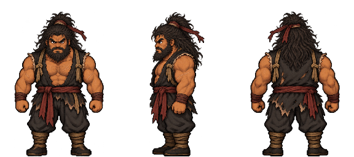
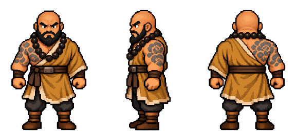
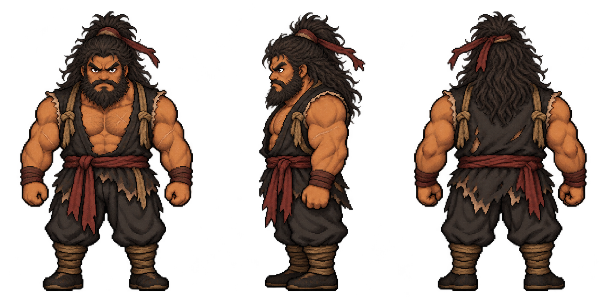
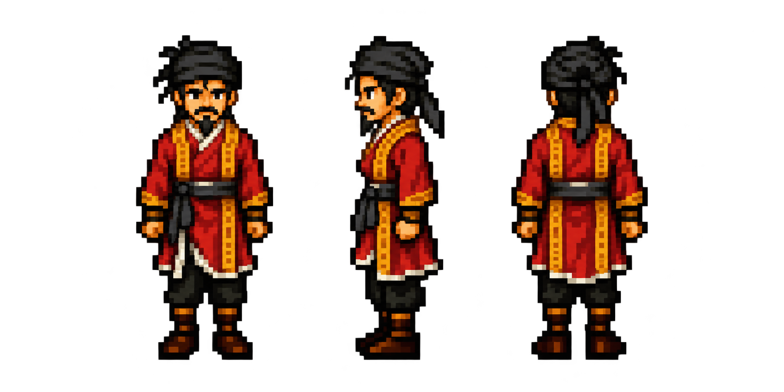

View on game backgroundsLi Kui · Classic standing design
Review candidate: front, left and back. His portrait supplies the wild tied hair, full beard, dark tan skin and ragged open charcoal vest. Original Classic proportions, broad build and full source colours are retained. Right-facing art, walking and battle follow design approval.
Li Kui · enlarged packed views

Lu Zhishen · approved broad-build comparison

Native Li Kui source

Original Classic style reference

192 × 256 cells; common baseline and a single nearest-neighbour resize from the native source. Transparent RGBA is preserved. The right row of the review sheet remains blank.